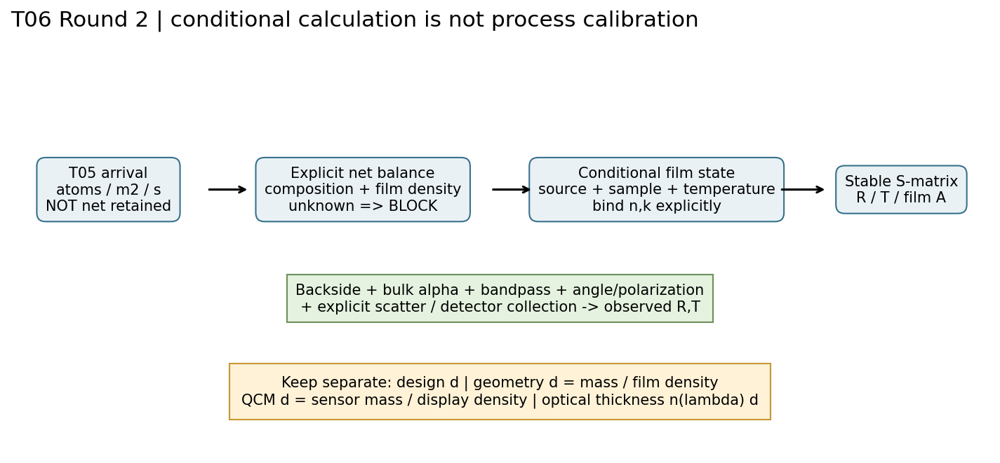
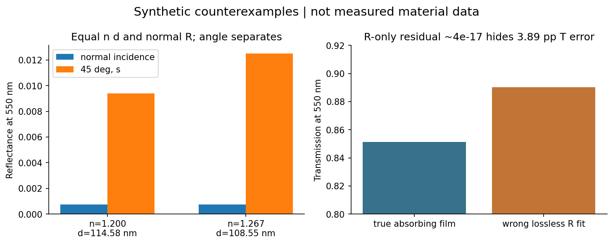
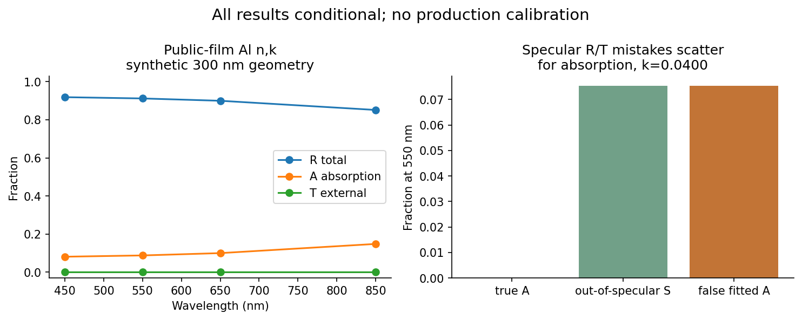

本地研究冻结。实际膜工艺、设备、批量与生产校准未运行；指定审核链未完成。没有ZIP、没有论文原文、没有上传。
README · 精确SHA256清单 · 阶段状态 · T07有界建议



# 工艺输入到条件化膜状态 ## 1. 本轮真正闭合的链 本轮把 T05 的单位工件实际表面积入射元素通量、T04 的元素净库存/膜态密度约束与 T06/T07 的光学核连接为可执行前向计算。净通量、密度、组成或膜状态缺失时没有一个从“期望反射率”自动补齐的暗门。`models/process_optics.py` 逐bin做余额，`film_index`检验来源绑定，`spectrum`执行测量合同。公开Al例输出是 `conditional_calculation`，实际未测模板输出是 `blocked_unknown_or_inapplicable`。二者均 `production_qualified=false`。 代表材料选Al是因为已有T05 Al元素口径、T04公开薄膜n/k以及T06金属膜家族可串联；不是因为证据证明Al适合用户所有应用。基片选择熔融石英仅为了明确public_bulk数据边界，不假定用户库存/设备。原第一轮及T04/T05文件只读。本轮没有重标T02完整oracle、T03优化器、点12或tau证据。 ## 2. 逐元素质量余额，不把入射当成膜 对元素a与bin j，F_a,j的单位为atoms m^-2 s^-1，面积已经是局部工件真实表面积；禁止再乘cos(theta)。源端强度、投影面积或QCM局部到达率必须先在T05解决几何转换。 给定当前层初始库存N_a,0，本实现支持两条互斥输入： 1. 独立给定净通量g_a,j；其measurement/synthetic证据在net_evidence中声明 2. 全部余额项已知时，g=eta F + reaction_gain − desorption − resputter N_a,end=N_a,0+sum_j g_a,j Δt_j；面质量m_A=sum_a N_a,end M_a/N_A。M_a用kg/mol、N_A用mol^-1，结果是kg/m²。每个bin检查负库存，不裁零，不让已耗尽的膜继续接受同一材料光学函数。本v1处理闭合单层及恒定组成/密度；界面交换、组分演化、孔隙填充、氧化分层须扩展显式状态模型。负净变化仍可在未耗尽的已有层计算最终库存；这不授权T03非负贡献优化器吞负增量。 组成sum nu_a A_a已知时，各N_a/nu_a必须相容；声明原子完整性后才能从化学式总数算质量。SiO2每式单元3原子，不能与Al单元素口径混同。未知H4、YbF3/YF3、分子/团簇等上游问题没有在此自动消失。此实现仅登记Al/Si/O摩尔质量；其它元素显式阻断，不能假装覆盖所有优先膜料。 ## 3. 四种厚度的不同角色 - 设计层厚d_design：优化/图纸目标；本公开参考情形设250 nm，纯场景值 - 几何厚度d_geo=m_A/rho_film：实际层的面积平均几何长度；合成净库存和合成膜密度2700 kg/m³算出300 nm。数值恰好等于论文样品名义厚度不构成复现原实验 - QCM等效厚度d_QCM=m_A,sensor/rho_display：示例0.0009 kg/m²与显示密度2700 kg/m³得到333.33 nm，仍在传感器位置，没有tooling反演或工件密度替代 - 光学厚度n(lambda)d_geo：逐波长相位相关量；另保存k(lambda)d_geo。斜入射传播相位用k_z而非简单n d，吸收强度路径也不是光学厚度的一个常数 本轮不把source density、bulk density、packing density和QCM density写进实际rho_film。光学数据、厚度和密度三者若来自同一联合拟合，必须保存协方差，不能当三条独立验证。 ## 4. 公开薄膜n/k与块材参数的位置 [PO-S01/02] McPeak Al资料来自300 nm室温热蒸发、模板剥离的试样；公开镜像注记150 Å/s，原文图5对照条件为3×10^-8 Torr。Al椭偏提取模型包含氧化层。我们继承T04 CC0数值文件中0.4–1.0 µm共121点，线性插值但不外推。来源条件、镜像哈希、论文和数据库许可分开记录。未提供逐点协方差就记录null，绝不填零。 本包计算的是这些n/k在“假设金属单层/熔融石英”中的前向响应，不重现模板剥离样品整个实验栈。天然氧化层厚度与其光学函数、实际基片/胶层、粗糙和环境时效未提供；本例显式省略氧化层，因此不能拿它验证论文反射率或生产膜。室温来源没有精确293.15 K温度证书；20°C是本算例求值温度，允许域固定为该场景，并非来源证明的热模型。 [PO-S03] Malitson为20°C熔融石英bulk n的Sellmeier式，不是SiO2沉积膜模型，不给本用户基片批次COA，也不提供零吸收保证。本算例bulk alpha=0是显式合成假设。所有工艺项到n/k的链接都经过已知状态和 `same_sample / assumed_transfer / unknown`；assumed_transfer只能探索性计算，不能晋升资格。 ## 5. 能拟合什么，不能据此得出什么 现有数据可支持条件模型时，应在样品、组分、密度、温度、后处理/老化、光谱与几何域内拟合，正k、正d和被动性是必要非充分条件。本轮提供小型有界 `fit_synthetic` 完整最小二乘入口，用于诊断可辨识性和假拟合；它拒绝将文献或unmeasured输入直接当本机校准集。没有实测联合工艺数据，故没有拟合“离子功率→n/k”的虚假响应面。将来接实测训练集需另写可追溯sample/domain交叉验证接口；不得仅改evidence标签绕过审核。
# 稳定光学核、能量与测量合同 ## 1. 核的物理约定 冻结T07 `optics_kernel.py`不作数值改写。时间exp(-i omega t)，被动复折射率N=n+ik、n>0、k>=0，长度统一µm；beta=n_inc sin(theta)，kz=sqrt(N²−beta²)取向前衰减支。s偏振导纳q=kz，p偏振q=N²/kz，幅度为切向E。接口S矩阵以Redheffer星积级联，传播因子exp(i2π kz d/lambda)不引入增长指数。R=|r|²，T=Re(q_out)/Re(q_in)|t|²，A=1−R−T。损耗不裁零；约10^-16负数可视作浮点闭合残差，超过核容差报错。 条件包括平面、局域、各向同性、非磁、非增益层，非吸收入射介质；不含退偏、双折射、磁光、非局域、图案化结构。精确临界/掠入射退化和超出89.9°的AOI拒绝。金属强衰减时T下溢为0不代表经认证无限OD，也不提供实际仪器杂散光下限。稳定计算不等于材料或测量正确。[PO-S04] ## 2. 基片背面与体吸收 两种可执行模式： - semi_infinite：T只是进入基片的通量，不是穿过真实基片后的外部透过率；A只含有限光学层。bulk alpha/背面未参与 - incoherent_finite_all_orders：前膜系统、反向膜系统、裸背面分别计算；基片相位随机化，所有横向走离往返光都被收集。厚度L、内部角theta_s、独立bulk alpha给单程功率P=exp(-alpha L/cos theta_s) 令前向(R_f,T_f,A_f)、反向(R_b,T_b,A_b)、背面(R_r,T_r)在实折射率端口归一。D=1−R_b R_r P²： T_total=T_f T_r P/D R_total=R_f+T_f T_b R_r P²/D A_film=A_f+T_f R_r P² A_b/D A_bulk=T_f(1−P)(1+R_r P)/D 因背面不吸收，有R_total+T_total+A_film+A_bulk=1。内部折射角随波长变化，所以反向前膜逐波长计算，不能使用单一外部角。alpha按m^-1、L按m；不会把mm/µm直接相乘。 这是“透明实n界面+独立Beer体损耗”的radiative-transfer近似，不是任意吸收介质界面的严格混合相干模型。bulk k较大、TIR/导波、散射反馈、相干基片条纹或部分横向收集时需别的模型；本模式不得假称适用。倾斜/wedge基片会改变返回光位置和相位，有限光斑/孔径若漏掉回光不能使用all_orders结果。实际背面镀膜尚不支持。 alpha=4πk/lambda仅是同一均匀介质强度衰减的单位关系。`alpha_to_k`要求证据scope与target scope相同；把块材吸收系数叫“薄膜k”明确阻断。bulk alpha不能补齐薄膜氧化、孔隙或缺陷损耗。 ## 3. specular、total和探测到的R/T 模型先算零散射平面栈R,T,A，再用显式fraction_of_R/T作合成能量再分配：S_R=f_R R，S_T=f_T T；R_spec=R−S_R，T_spec=T−S_T。total包含对应半球散射，R_total、T_total不变。探测值R_det=R_spec+eta_R S_R，T_det=T_spec+eta_T S_T，其中eta是指定检测几何收集分数。 因此1−R_spec−T_spec=A_abs+S_R+S_T，不能把specular缺口全称吸收。只有匹配波段、校准、整个出射半球或适当全收集合同下，1−R_total−T_total才可作为A估计。[PO-S05/06] 积分球端口损失、样品替代、镜面排除挡板和探测器响应需要校准；某一NIST装置的8°条件不是本机普适标准。 本散射操作只是可证伪“漏项导致假吸收”的小模型：未计算粗糙界面场反馈、BRDF/BTDF、偏振转化、背散射重新入膜或多次散射吸收。不能用RMS粗糙度单值直接代替f_R/T，更不能把拟合出的f当实测BRDF。真实散射unknown时阻断；显式设0是场景假设，不是测得零。 ## 4. 光谱/角度响应 measurement记录每个中心波长、角度、s/p或unpolarized，带宽离散响应节点offset_um/weight及角分布offset_deg/weight，节点权重均有限非负且和为1。程序在每个真实节点求值后按功率平均，含unpolarized=(s+p)/2，不平均复振幅。任何节点超出材料波段/角度域就阻断，不能只验中心波长。 本Al例三个谱节点±1 nm、0，权重1/6、2/3、1/6，角分布为delta45°；这是完全声明的合成离散仪器核，不声称精确Gaussian或实际狭缝带宽。实际仪器应提供线展宽函数或经收敛验证的积分节点；FWHM不足以唯一确定尾部。角分辨、NA、入射面、方位、光斑、波前、探测孔径和样品背面状态都影响对照。同样R/T曲线若合同不同，不能直接作为“复现实测”。
# 可证伪反例、条件拟合与可辨识性 以下全部是人为定义的合成数据；任何n、k、d、散射和噪声均不能登记为材料实测。`models/diagnostics.py`可再生相同数据，`verification/diagnostics.json`保存完整机器输出。这里的“拟合成功”只表示数值残差，绝不等于原工艺解释正确。 ## A. n/d非唯一不是一句“只看nd” 单波长lambda=550 nm、空气入射、基片n_s=1.52、无吸收四分之一波膜。设n1=1.2，d1=lambda/(4n1)=114.5833 nm；另取n2=n_s/n1=1.2666667，d2=108.5526 nm。二者nd均137.5 nm。法向的等效导纳分别n1²/n_s与其倒数，反射振幅符号相反、强度相同：R1≈R2≈0.000730460189920。无损时T=1−R，因此多加同一条件T也不能区分这对。 45° s的R分别0.00939834与0.01250772，可用新的角度/偏振证伪。相位测量也可能区分法向幅度的相位。另一类单波长厚度周期别名是d与d+m lambda/(2n cos theta_f)。本例不是声称所有相同nd的n,d都给同样光谱；接口导纳、色散、k、角度和带宽通常会打破这种简单等价。全谱条件和独立几何厚度测量均有价值。 ## B. 只有R或单角度的辨识边界 在固定单波长/单角度，y=R是一条标量，对theta=(n,k,d)的局部Jacobian至多秩1；加T最多秩2，仍至少一个局部自由方向。程序以明确参数列尺度做SVD，不把混合单位导致的大条件数当固有病态。局部满秩仍不代表全局唯一、噪声下可靠或模型正确；还需要残差/噪声权重、边界敏感性、先验来源及留出测量。 “只有一个角度”本身并不证明任何模型都不可辨：宽谱、一致色散模型、独立d或k约束可增加信息。反之，给每个波长自由n/k再拟合同一R曲线仍可能欠定。高反Al300nm的透过极小，反射对继续加厚不敏感，适合边界示范却不是理想d辨识样品。不得从不透明膜的R拟合给d附上虚假的极小置信区间。 ## C. 漏吸收仍可精确匹配R 合成真实膜n=1.8、k=0.02、d=100 nm、lambda=550 nm、n_s=1.52、法向。错误模型强制k=0，仅调n即得到n≈1.78594034，单点R残差4.16×10^-17。真实T≈0.85126999，错误模型T≈0.89013618，留出T相差0.03886619（3.89个百分点）。机器精度小残差完全不能证明“无吸收”。此例只需一次一参数有界小拟合，不是大规模优化。 ## D. 漏散射，R/T也能假拟合成吸收 真实合成膜k=0，把R的4%、T的8%送到镜面探测孔径外，但全半球能量仍无吸收。specular缺口≈0.07548747。错误无散射模型同时拟合单点R_spec、T_spec，可得到k≈0.04001148、厚度尺度≈0.99321608，残差约7.85×10^-17。错误A恰好吞掉散射缺口。 保持该错误模型，在60° s留出点检验，R/T偏差约(+0.00515819,−0.00299654)。全半球R/T或角分辨散射测量可以更直接拆分损耗。本例不宣称真实材料散射等同常数比例，也不把k≥0的拟合当物理有效性充分条件。 ## E. 块材吸收不能填薄膜k bulk alpha=0.5 m^-1、lambda=0.55 µm按同介质单位式给k_bulk≈2.18838×10^-8。`alpha_to_k(...,'bulk','film')`明确拒绝；只有bulk→bulk的量纲检查通过。单位对了仍不意味着样品状态匹配。薄膜成分/孔隙/缺陷/氧化层与块材可能显著不同，bulk低吸收不能据此排除膜吸收。 ## 明确失败/阻断清单 | 输入或操作 | 行为 | 原因 | |---|---|---| | actual_unmeasured | blocked | 净留存/实际膜密度/状态/nk未测，不自动补齐 | | density null、bulk或QCM density | blocked | 几何转换没有实际膜态密度 | | composition incomplete/null | blocked | 元素库存到层质量/状态不闭合 | | state/sample/temperature不匹配 | blocked | 材料函数适用性不满足 | | 波段外/带宽边缘超范围 | blocked | 禁止外推公开光学常数 | | bulk n/k绑定膜 | blocked | 来源状态口径错误 | | scatter unknown | blocked | 探测缺口不能自动归吸收 | | 元素耗尽/组成失配 | blocked | 当前单层状态失效 | | JSON拼错/缺字段、负k、非法权重 | 拒绝输入 | schema或语义不成立 | | public或unmeasured数据送fit_synthetic | blocked | 防止合成演示冒充本机校准 | 同一拟合集训练集是前向生成数据再拟合，仅验证软件行为。必须有独立来源的留出测量才能考察预测；本轮留出也是合成证伪，仍不是实验验证。
# 测量需求、不确定度与后续设备计划 ## 1. 哪些量需独立测 本轮没有安排或执行设备/采样/付费任务。下列是解除阻断的输入合同，不是对某台设备下发的实验配方。 1. 工艺身份与历史：源料批次/纯度/物种，沉积速率历史，真空残气/反应气体，局部温度时序，离子能角谱与电荷/快中性成分，源到工件几何及实际面积。功率设定不能替代局部到达量 2. 净质量与几何厚：独立膜面质量/净库存或可溯源截面/台阶厚度；对照QCM原始频率、声学模型、显示密度和tooling。至少有一条非光谱拟合的厚度/面质量证据，避免n与d循环验证 3. 膜组成/状态：元素完整性、化学计量、氧化层、孔隙、结晶/相态、污染、后处理与环境时效。密度须针对该实际膜样品/同条件见证片，不用源料密度 4. 光谱基线：同批空白基片n、厚度、楔角、背面、bulk absorption；涂层与未涂层的相同孔径光谱。透明范围不表示alpha=0 5. 光学测量：至少覆盖目标带、记录s/p、AOI、NA和方位、角/谱仪器函数、光斑尺寸位置与样品非均匀性；能提供椭偏幅相时须保留模型与相位约定 6. 损耗拆分：镜面R/T之外，使用定义清楚的半球收集/积分球或BRDF/BTDF去约束散射；低吸收精测需要与仪器本底匹配的独立方法。任何仪器“未检出”必须带上限而不是零 这些需求可按目标精度分层。若只要某已测样品的光谱插值，不必声称建立全工艺响应；若要由新工艺预测新膜，则需要跨独立工艺变化的联合状态与光谱数据。保留验证样片/时点，不能把所有数据既训练又验证。 ## 2. 建议的最小辨识设计 先作小型可控见证片集：厚度独立变化、保留相同状态的重复样、至少两个不共线的工艺变量变化。每个样品先锁定组成/密度/粗糙/氧化的证据，再用多角s/p和R/T联合拟合有限参数。一个变量变化同时改变密度、氧化和厚度时，不能把结果全归于离子剂量。 建议增加一组未用于拟合的角度/波段或独立表征作为留出。选角度/波段应看带噪Jacobian的奇异向量与拟合参数边界，而不是仅追求数据点数量。强吸收不透明膜T的信息接近仪器底噪，可加入较薄且连续性的见证片，但其微结构/岛状形成可能改变n/k，不可直接当同状态厚度序列。基片背面影响、散射与氧化应单独进行模型比较；A=1−R−T的噪声相关性须保留。 ## 3. 七轴不确定度不混成一个数字 - source：公开数据提取、样品来源与版权镜像溯源；公开n/k逐点协方差未知 - time：通量/温度/气氛时序采样与异步；短时变化不能用全程平均消除 - space：QCM位置到工件及膜非均匀、光斑取样 - geometry：AOI、面积法线、光斑、背面楔角/收集孔径 - kernel：离散带宽/角积分、数值精度、实n+bulk alpha近似 - input：组成、实际膜密度、厚度和传感器读数各自协方差 - model：公共膜迁移、氧化、散射反馈、缺失状态变量 unknown在JSON中为null，不当零；七轴未闭合时，不输出一个“总±x%”掩盖未知。局部几何d=m/rho的小扰动有u_d²=(u_m/rho)²+(m u_rho/rho²)²−2 m Cov(m,rho)/rho³；而面质量来自元素库存，各元素测量可能相关。正协方差有时降低单一比值方差，不等于实际未知被抵消。 ## 4. 完整但默认不执行的计算驱动 `batch_driver.py`包含网格构造、多波段拼接、多角/偏振前向、每参数中心差分Jacobian、带显式列尺度的SVD、输入协方差PSD检查、J Sigma J^T、固定seed的多元正态Monte Carlo及逐抽样域失败登记。异常抽样不静默裁剪；valid条件统计与全部不确定度区别保留。 默认计划包含3个波段、441个去重波长、5角度×3偏振、4参数、1000次抽样，估计约6,674,535个前向波长求值。该估计未计非偏振拆分、带宽/角节点及反向/背面求解，不能当精确操作数。这不是已运行数据，也不是时间/内存/GPU性能证明。默认 `plan_only` 不启动数值批量；`--execute`要求显式输出路径。驱动有计算规模上限，不自动GPU、不搜索设备、不跑上游oracle。 现阶段仅执行2波长×1角×1偏振且MC=0的路由小测试，以及4波长/单参数、2抽样的不确定度算术。二者证明分支可用，不证明生产校准、置信覆盖、带宽收敛或整个批量性能。完整计划中A/B/k为合成Cauchy参数，不能拿来描述Al真实工艺映射；公开Al参考例单独前向计算。 ## 5. 当前停止条件 当前范围在本地freeze和reader完整性验证后结束。真实输入缺口保持pending，不安排实验、不安排设备、不无限增大合成扫描。下一轮T07可研究条件可辨识设计与稳健逆问题的测量算子，但必须保持本轮材料/测量边界，不把未测响应伪装成已识别工艺。
# 实现、复现证据与接受边界 ## 交付与范围 只新增 `06_optical_coating_families/round2_process_optical_observables`。目录外文件在开工时取SHA256并在freeze时复查；T06实现没有触及首轮、其它topic、产品、root STATE或仓库元状态。开工快照至冻结期间，另一个已授权的规划发布任务更新了7个根规划文件；已由协调者及该任务提供逐文件当前SHA256确认，完整记在verification/concurrent_planning_changes.json。原始before快照保留，其余1097个目录外文件逐字未变；边界结果明确为passed_with_attributed_concurrent_changes，不能表述成整个项目零变化。未发现当前项目副本Git根，不把文件完整性快照冒充Git commit。没有push或上传；reader为普通目录，没有ZIP，没有论文原文。 本包为algorithmic阶段，实际作者/工具完成小数据实现与自审；来源核对和一次窄量纲/光学核查使用GPT-6 Luna。指定DeepSeek、Seed Pro、Sol完整阶段审核未实际运行，对应状态仍not_run；窄核查不能冒称它们的独立接受。状态为 `implementation_ready_validation_pending`，不是accepted或production-qualified。 ## 复现路径 `models/build_inputs.py`生成严格schema和案例；修改它后须重建案例并复核变化。`process_optics.py`做输入验证和完整转换；`inference.py`是有界合成拟合、局部灵敏度与协方差；`batch_driver.py`默认只返回plan。`diagnostics.py`重建少量反例；`plot_figures.py`只画已保存结果，不另跑光学扫描。 单元测试以 `PYTHONDONTWRITEBYTECODE=1 PYTHONPATH=models python -m unittest discover -s tests -v`运行，日志在verification/unit_tests.txt。独立窄核查证据见reviews/independent_optical_check.md及独立测试文件。`data_qa.py`校验严格fixture、121点公共数据范围和vendor T07核逐字哈希；不读取论文原文、不依赖上游运行。 `reader.py`先验证精确路径允许列表、字节数与SHA256，再把唯一允许的payload复制到隔离临时目录，只执行小测试、data QA、默认plan和现存诊断再现对比。禁止符号链接/越界路径/额外文件/原文/ZIP。相邻项目目录不参与，未包含论文全文也不假称包含。PNG/SVG是本包原创图；源文献只以URL和原创摘要呈现。 SHA256用于偶发损坏/变更检测，不是可信签名。掌握清单写权限的人可同时替换代码与哈希，因此不构成抗恶意篡改认证。排除仅限清单自身、自校回执和目录外快照/对照文件及pycache/pyc；检查这些排除集合必须与代码一致。修改payload后须重新自审和freeze，不能沿用旧回执。 ## 本轮已核实与未核实 已核实：单位转换的实现与合成算术；在声明域内被动稳定光学计算；有限不相干基片的能量分账；镜面/半球/检测值区别；missing/domain拒绝；合成非唯一/遗漏项的明确反例；默认不启动批量；局部reader无上游依赖。 未核实：实际沉积工艺→n/k响应；本机实际膜密度、组成、氧化、温度和历史；公共Al薄膜向假设基片迁移；实际散射与真实探测器卷积；大型网格/层数/角度/Monte Carlo收敛；指定审核链；设备速度/稳定性；量产工艺校准/接受。真实设备、物理实验和完整批量统一not_run。 上游必须继续保留：T02完整oracle partial；T03现有非负贡献优化器不接净侵蚀；点12离子参考not_run；tau非严格条件包络；T05单QCM源强/形状及etaQ不可辨识、QCM声学/温漂/工具因子未校准。当前研究包没有把这些合并成一个未知会自行消失的总误差。 ## 不等于交付的行为 能在本地计算条件光谱，不等于测得实际材料参数；拟合残差很小，不等于唯一识别或模型无漏项；设备计划存在，不等于已经运行；单测通过，不等于生产验证；本地HTML reader不是部署网站。这些语义均在机器status与报告中保留。
本地自校：python models/reader.py --directory .。此reader不使用兄弟目录、ZIP或文献原文；哈希不是可信签名。